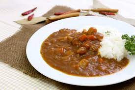
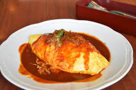

最近作った料理について
カレーライス
料理の定番。一人暮らしといったらこれ。作りおき最高！カレーライスです。いいですよね。
飽きたらパスタソースにするなり、卵焼きにしたり、グラタンみたいにしたり。
さまざまなアレンジができる素晴らしい料理です。
２日目が美味しいので、次の日食べようとしたら、カビてました。
厚切りの鶏肉が...

麻婆豆腐
豆腐ともとを用意するだけで簡単に作ることができる。マルミヤには頭が上がりませんね。
キャベツや玉ねぎ、ひき肉、卵etc様々加えても美味しく食べることができる。
麻婆丼美味しいね。
豆腐入れる時に、毎回コンロ周りが汚くなるのは困りごと。

オムライス
卵が増えれば増えるほど幸せになれる食べ物。上手く作ろうと思っても、ケチャップご飯の厚焼き卵のせになってしまう料理。
鶏肉入れるとこれは親子丼の親戚かなと考えるやつ。
毎回、人参と玉ねぎをみじん切りにするのがめんどくさく思ってしまうもの。
そんな、オムライス。
